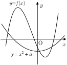
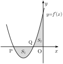

1.닫힌구간 [2,5]에서 함수 f(x)=x3−6x2+9x+a의최댓값을 M, 최솟값을 m이라 하자. M+m=30일 때,상수 a의 값은? [4.0점]
①3②4③5④6⑤7
2.다항함수 f(x)가 모든 실수 x에 대하여
∫0xf(t)dt=x3+5x
를 만족시킬 때, f(2)의 값은? [4.0점]
①17②18③19④20⑤21
3.시각 t=0일 때 출발하여 수직선 위를 움직이는 점 P의시각 t(t≥0)에서의 위치 x가x=t3−23t2−18t이다. 출발한 후 점 P의 운동 방향이 바뀌는 시각에서의점 P의 가속도는? [4.0점]
①9②11③13④15⑤17
4.실수 전체의 집합에서 연속인 함수 f(x)에 대하여
f′(x)={2x3(x<1)(x>1)
이고 f(0)=1일 때, f(3)의 값은? [4.0점]
①7②8③9④10⑤11
5.두 상수 a,b에 대하여 실수 전체의 집합에서 연속인함수 f(x)가 다음 조건을 만족시킬 때, ∫58f(x)dx의 값은?[4.2점]
(가)
x<0에서f(x)=x+5이고,0≤x≤5에서f(x)=x2+ax+b이다.
(나)
모든 실수 x에 대하여 f(5+x)=−f(5−x)이다.
①9②7③5④3⑤1
6.다항함수 f(x)가 모든 실수 x에 대하여
xf(x)=∫2xf(t)dt+3x4+2x3−5x2
을 만족시킬 때, f(−1)의 값은? [4.2점]
①5②6③7④8⑤9
7.두 실수 a,b와 양수 c에 대하여 함수 f(x)를f(x)={−x2+ax+bx3+cx−4∣x−c∣(x≤0)(x>0)이라 하자. 함수 f(x)가 다음 조건을 만족시킬 때, f(−1)의최댓값은? [4.2점]
(가)
함수 f(x)는x=0에서 미분가능하다.
(나)
x1<x2인 모든 실수 x1,x2에 대하여
f(x1)<f(x2)이다.
①−25②−20③−15④−10⑤−5
8.두 함수
f(x)=x3+x2+4,g(x)=x2+3x+a
가 있다. x≤0인 모든 실수 x에 대하여 부등식
f(x)≤g(x)
가 성립할 때, 실수 a의 최솟값은? [4.2점]
①2②3③4④5⑤6
9.곡선 y=x3−2x2−3x+5(−1≤x≤1) 위를 움직이는점 P와 직선 x−y−10=0 사이의 거리를 최소가 되게 하는곡선 위의 점 P의 좌표를 (a,b)라 할 때, a+b의 값은? [4.4점]
①1②2③3④4⑤5
10.함수 h(x)=x3+3x2−24x−20의 그래프가 그림과 같다.

x에 대한 삼차방정식 x3+4x2−24x−20=x2+a에 대하여<보기>에서 옳은 것만을 있는 대로 고른 것은? [4.4점]
① ㄱ② ㄱ, ㄴ③ ㄱ, ㄷ④ ㄴ, ㄷ⑤ ㄱ, ㄴ, ㄷ
11.서로 다른 두 정수 a,b에 대하여사차함수 f(x)=(x−a)3(x−b)+4가 다음 조건을만족시키고 x에 대한 방정식 f′(x)=0을 만족시키는 서로다른 모든 실근의 합이 최소일 때, f(0)의 값은? [4.5점]
(가)
함수 f(x)는 구간 (−∞,−2]에서 감소하고,구간 [−2,∞)에서 증가한다.
(나)
f′(t)=0을 만족시키는 t<−2인 실수 t의 값이존재하지 않는다.
①−1②0③1④2⑤3
12.최고차항의 계수가 1인 사차함수 f(x)에대하여 f(0)−f(−2)=f(2)−f(0)=f(4)−f(2)이고,곡선 y=f(x) 위의 점 (−2,f(−2))에서의 접선과점 (4,f(4))에서의 접선이 점 (k,k+4)에서만난다. f(2k)=90일 때, f(3k)의 값은? (단, k는 상수이다.)[4.5점]
①16②21③26④31⑤36
13.곡선 f(x)=x3−2x+4 위의 점 P(1,3)에서의 접선 l이곡선 y=f(x)와 만나는 점 중 P가 아닌 점은 Q(−2,0)이다.곡선 y=f(x) 위의 점 중 접선 l과의 거리가 d인 점의개수가 3일 때, d2의 값은? [4.7점]
①4②8③12④16⑤20
14.두 다항함수 f(x),g(x)에 대하여 함수 f(x)−g(x)의한 부정적분을 H(x)라 하자. H(0)=H(3)이고, 두함수 f(x),g(x)가 모든 실수 x에 대하여 다음 조건을 만족시킬때, g(1)의 값은? [4.7점]
(가)
∫f′(x)dx=2g′(x)+∫12xdx
(나)
∫f(x)dx=xg(x)−∫g(x)dx
①15②18③21④24⑤27
15.실수 전체의 집합에서 증가하고 연속인 함수 f(x)가 다음조건을 만족시킬 때, f(2)=k가 될 수 있는 정수 k의 개수는?[4.7점]
17.정수 m에 대하여 시각 t=0일 때 원점을 출발하여 수직선위를 움직이는 점 P의 시각 t(t≥0)에서의 속도 v(t)가v(t)=2t3−6t+7−m이다. 시각 t에서의 점 P의 위치를 x(t)라 하자. 함수 x(t)가다음 조건을 만족시키도록 하는 m의 최댓값과 최솟값의 합은?[5.2점]
(가)
x(k)<0인 양수 k가 존재한다.
(나)
모든 양수 t에 대하여 x(t)≥−12이다.
①15②16③17④18⑤19
18.최고차항의 계수가 1인 삼차함수 f(x)와 두실수 p,k(−p<k<0)에 대하여 곡선 y=f′(x)는x축과 두점 P(−p,0),Q(k,0)에서 만난다. 곡선 y=f′(x)와x축으로둘러싸인 부분의 넓이를 S1, 곡선 y=f′(x)와x축 및 y축으로둘러싸인 부분의 넓이를 S2라 하자.

함수 f(x)가 다음 조건을 만족시킬 때, 가능한 모든 p에대하여 ∫−3−2f′(x)dx의 값의 합은? [5.2점]
(가)
S1=S2이다.
(나)
곡선 y=f(x) 위의 점 A(−2,f(−2))를 지나는곡선 y=f(x)의 접선 중에서 곡선 y=f(x)와 이접선으로 둘러싸인 부분의 넓이가 364인 접선이존재한다.
①8②6③4④2⑤0
<서답형 문제 – 20점>
서답형 1
함수 f(x)=4x(x−2)(x−7)과 실수 t(0<t<2)에 대하여함수 g(x)는x<t에서g(x)=f(x)이고,x≥t에서g(x)=−4(x−t)+f(t)이다. 함수 y=g(x)의 그래프와x축으로 둘러싸인 부분의 넓이를 S(t)라 할 때, S(t)의최댓값을 구하시오. [10점, 풀이과정을 상세히 쓰시오.]
서답형 2
상수 k(k<0)에 대하여 두 함수 f(x),g(x)가f(x)=x3−x2,g(x)=2x∣x∣+k
이다. 다음 물음에 답하시오.
(1) 두 곡선 y=f(x),y=g(x)가 오직 두 점에서 만나도록 하는 k의 값을 구하시오. [3점, 답만 적으시오.]
(2) (1)에서 구한 k에 대하여 두 곡선 y=f(x),y=g(x)로 둘러싸인 부분의 넓이를 구하시오. [7점, 풀이과정을 상세히 쓰시오.]